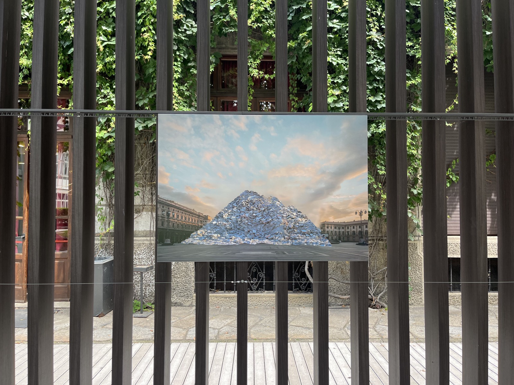
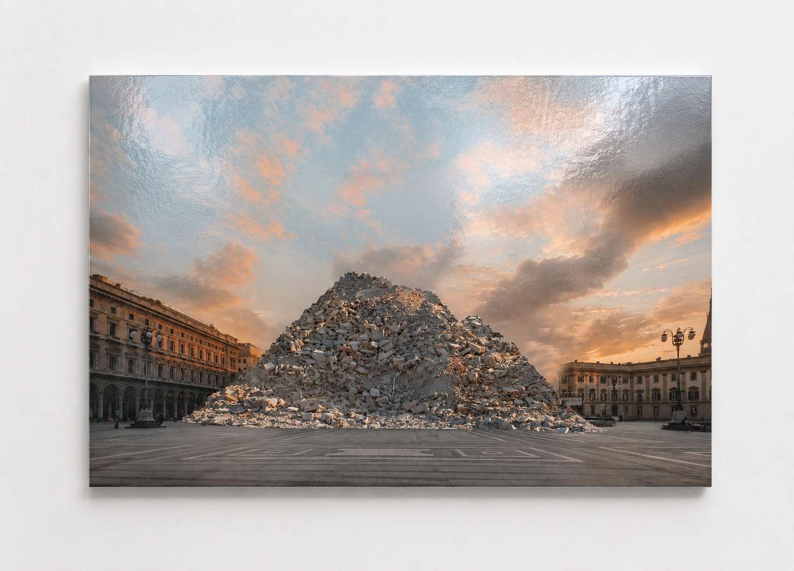

Ruins
- stampa su forex, 100 × 70 cm
La mia visione del futuro si configura come una distopia non così distante dal presente. Realizzato in occasione della mostra Diversi Presenti , il lavoro nasce dall’osservazione dei conflitti contemporanei e delle immagini di distruzione che attraversano quotidianamente il nostro presente.
Attraverso la rappresentazione di un futuro ipotetico segnato dalla rovina, l’opera immagina la distruzione di luoghi simbolici e collettivi, interrogandosi sul valore materiale e immateriale che questi spazi custodiscono. Il Duomo di Milano, scelto come soggetto centrale, viene raffigurato ridotto a un cumulo di macerie, mettendo in discussione l’idea di permanenza e la fragilità dei simboli che abitano il nostro paesaggio urbano.
La ricerca prende ispirazione dalla Montagnetta di San Siro, un rilievo artificiale nato dalle macerie della Seconda Guerra Mondiale e successivamente trasformato in uno spazio verde all’interno della città. La rovina diventa così non soltanto una testimonianza di perdita e distruzione, ma anche un possibile luogo di trasformazione e rinascita.
L’opera si propone come una riflessione sul rapporto tra presente e futuro, invitando a considerare le conseguenze delle azioni umane e la possibilità di intervenire sul corso degli eventi prima che ciò che oggi riconosciamo come patrimonio collettivo venga perduto.


